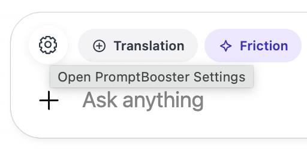
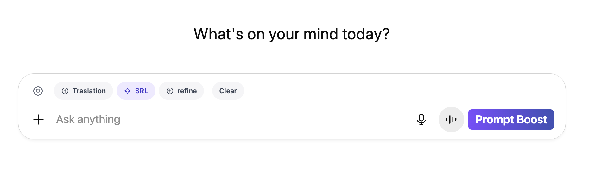
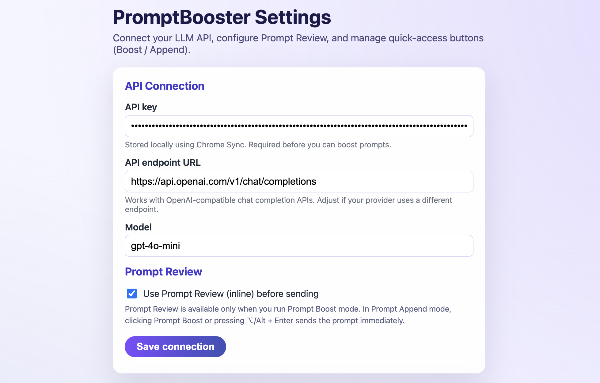
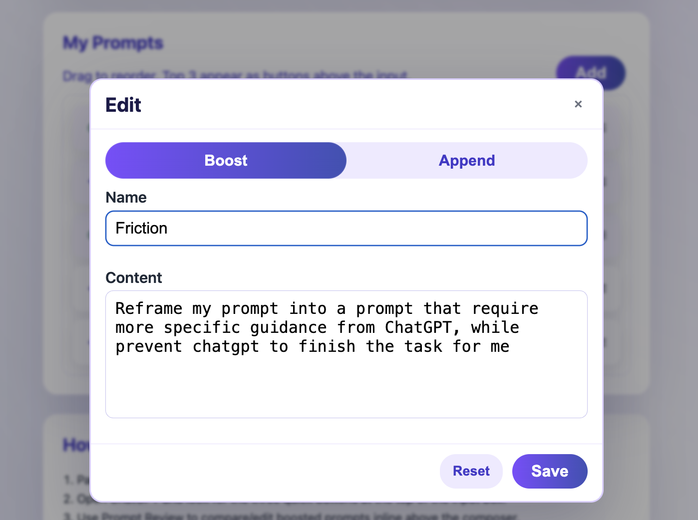
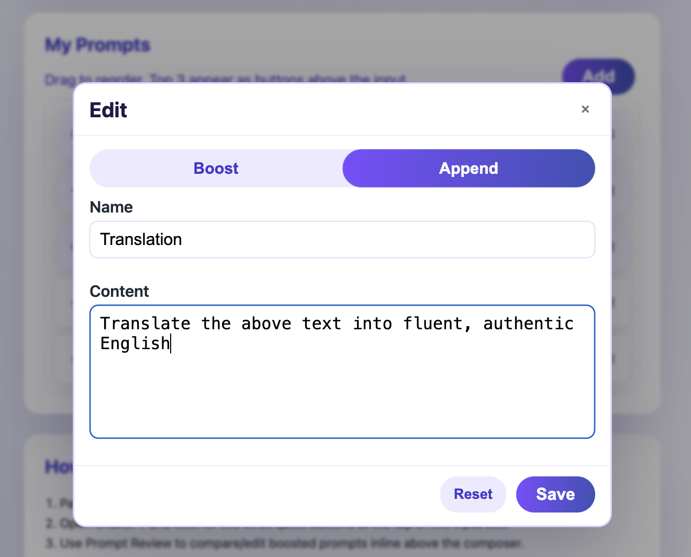
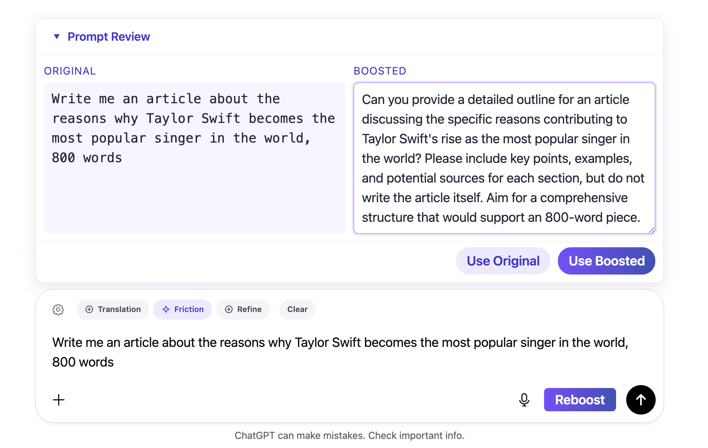

What is Prompt Booster and why was it designed?
Prompt Booster was created to help users get more out of their interactions with AI. Too often, prompts are either too shallow (outsourcing all the thinking to the AI) or too generic (leading to weak or superficial responses). Prompt Booster solves this problem by automatically enhancing prompts before they’re sent with one click, giving users a smoother and quicker way to achieve richer, more reliable outputs.
Two Core Features
Prompt Improvement Users can ask Prompt Booster to improve their prompts in ways that fit their goals. For example:
- Transform a vague request into a comprehensive and evidence-based prompt that encourages ChatGPT to provide well-supported, verifiable responses.
- Reframe a lazy or over-reliant prompt into one that guides the user to complete the task themselves, rather than asking the AI to do all the work.
- Encourage deeper reflection or critical thinking by automatically rewriting prompts to push the AI toward more analytical or thought-provoking answers.
Prompt Append With a single click, users can add predefined, repeatable requirements to any new input. This saves time and ensures consistency across different tasks. For example:
Translate: Translate the above text into natural, fluent English that reads as if written by a native speaker.
Polish: Polish and refine the language to make it smoother, more professional, and stylistically consistent.
Summarize: Summarize the content clearly and concisely, highlighting the key points in a structured way.
Simplify: Rewrite this paragraph so it is easier to understand, using simpler words and clearer sentence structures.
How to Get Started with Prompt Booster
1. Install & Connect
First things first—get Prompt Booster onto your browser.
- Add
Prompt Boosterto Chrome and pin it to your toolbar so it’s always just one click away. - Open the settings page (look for the little gear ⚙️) and paste in your API key. 
- Not sure where to find your API key? No problem—here’s a quick guide that walks you through it.
 
This is the main interface of the software. In terms of visual design, I made the buttons consistent with ChatGPT’s own buttons to achieve a clean and sophisticated style. I chose purple as the primary color—not only because it conveys a sense of elegance, but also because of my personal connection to my undergraduate alma mater, The Chinese University of Hong Kong, Shenzhen, where purple is one of the theme colors in its emblem. I also added a gear button so that users can quickly access the plugin’s settings. Otherwise, using KORN’s built-in method would be too cumbersome, since users would have to click Extension, then More Options, and finally Options.
2. Configure Your Prompt Modes
This is where the fun begins—you can customize Prompt Booster to work exactly the way you want.
- Go to
My Promptsto create or edit bothBoost PromptsandAppend Prompts. - Drag and drop them around with the
three-line iconto reorder. - Pro tip: the
top three promptsbecome quick-access buttons right in your ChatGPT input box, so keep your favorites up there.

Boost Mode: Smarten Up Your Prompts
Ever typed something vague into ChatGPT and wished it came out sharper, deeper, or more structured? That’s exactly what Boost Mode is for.
 
- Just tap the
Boostbutton from the quick options. - Hit the
Prompt Boostbutton or press⌥/Alt + Enterto instantly upgrade your prompt. - If you enable
Prompt Review, you’ll see youroriginal vs. boosted promptside by side—super handy for comparing. - You can choose
Use OriginalorUse Boosted, or just press⌥/Alt + Enteragain to send whichever you like. - Not quite there yet? Click
Reboostto spin up another optimized version until it feels right.

Here I added a Prompt Review feature that lets users compare their original prompt with the revised one. On the one hand, this gives them the option to still use their own prompt. On the other hand, it allows them to see what the revised prompt looks like, making it more likely they’ll use it as a reference to learn how to craft more effective or better-tailored prompts. To prevent situations where users are dissatisfied with the revised prompt, I also added a Reboost function, which lets them request another revision. I also added keyboard shortcuts. At first, the shortcut for sending a prompt modified by PromptBooster was Enter. But during my own use, I realized I don’t always need PromptBooster. So I kept Enter for sending my original prompt, and added Option + Enter for sending the boosted version in the selected mode. This way, users stay in control while still having the quickest way to use PromptBooster.
Append Mode: Add Your Personal Touch
Sometimes you don’t want your whole prompt rewritten—you just want to make sure a certain instruction always gets added. That’s where Append Mode shines.
- Select
Append(paperclip-style icon) from the quick buttons. - Click
Prompt Boostor press⌥/Alt + Enter—your input goes through exactly as written, but with your chosen “append rules” automatically tacked on.
✨ And that’s it—you’re ready to roll! With Prompt Booster, you can choose between fully boosting your prompt for depth and quality or simply appending your go-to rules with a single click.
Your prompts, your way—just smarter. 💡
Next, I’m going to collaborate with NanoBanana to create the logo for this extension, and I’ll also submit it for review and try to publish it so that it can actually be used by the public.
````